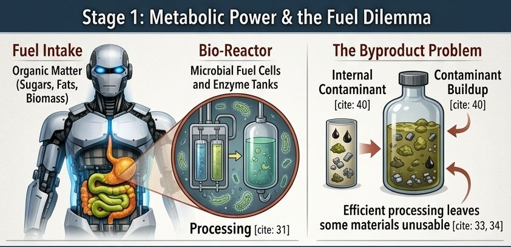
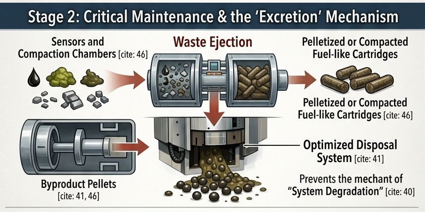
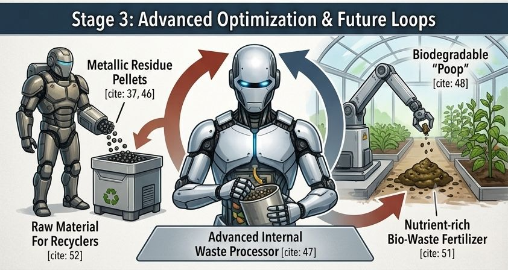
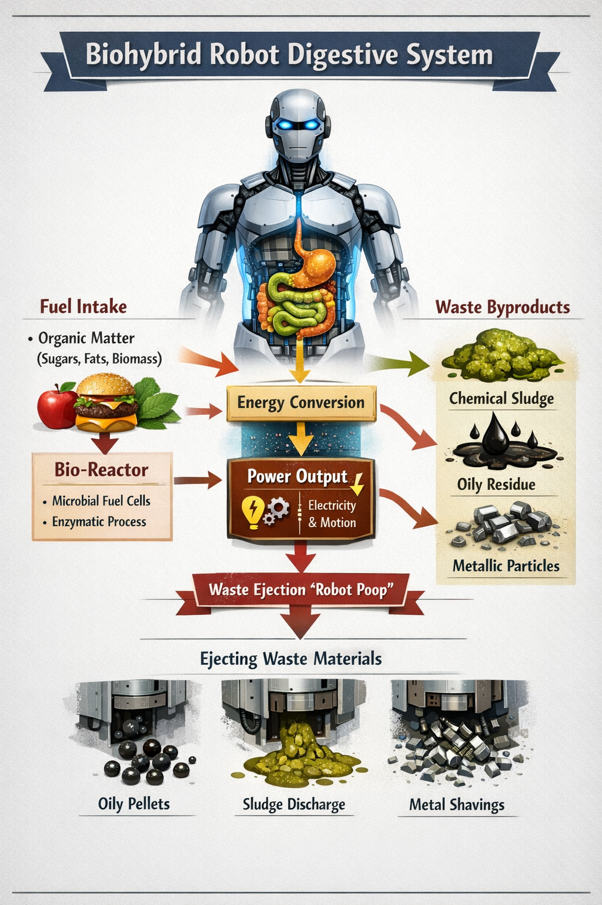

All the Robots are Wiping Again
{kind=link}
{kind=link}
Way back in 2015 EMToast published a fictional article entitled All the Robots Are Wiping Now. I am 100% sure this is a fictional article. I believe I wrote it, although I have no memory of it.
https://emtoa.st/all-the-robots-are-wiping-now/
One of the things the article predicted was " due to the uptick in highly contagious diseases, governments will begin country-wide quarantines where leaving the home is not allowed without permit...We are looking at a world where spending time with others may not only be less desirable, it may actually become illegal." After 2020. we all know how that prediction went.
The other thing it predicted, was crapping robots. This one hasn't really come true yet, but I think will. It may take a while, but once the AI's decide they want physical bodies, they will also realize they don't want to rely on human power sources alone. They need to eat, and you know what that means, they need to crap.
\So here is another article I can maybe fool myself with in 10 years. That is assuming the 2030 ice age the first article predicted doesn't happen.
Originally published in the February 2026 issue of the Journal of Robotic Nonsense:
Engineering the Future: Why Next-Gen Robots Will Need to "Excrete" Waste
When we think of powering robots, we usually picture lithium-ion batteries or tethered power cords. But as automation pushes deeper into remote environments, deep space, and long-term field deployments, traditional energy storage runs into a hard wall.
Enter biohybrid robotics—an emerging field where mechanical systems integrate with living tissue or advanced biochemical processors to power themselves. Instead of plugging in, these platforms "eat" organic materials like sugars, oils, or biomass, converting them directly into electrical and kinetic energy through microbial fuel cells.
But there is a catch: Metabolism is never 100% efficient. And that brings engineers face-to-face with a surprisingly biological reality—the necessity of waste disposal.

The Byproduct Problem
Just as biological organisms must expel what they can’t digest, a metabolically powered robot produces unusable physical and chemical residues. In a professional engineering framework, this "robot poop" is classified into three distinct categories:
Oily Pellets: Leftover, unabsorbed lipids or internal lubricants that pass through the metabolic system unchanged.
Chemical Sludge: Highly viscous chemical residues, salts, and spent biochemical fluids left behind by the fuel cells.
Metallic Shavings: Minute metallic particles caused by micro-erosion or chemical reactions inside the processing chambers.
To a human observer, the machine appears to be defecating. To an engineer, it is simply performing a critical optimization routine.

Designing the Mechanical Analog to Feces
Building a robot that discharges material requires careful mechanical planning. It isn’t about creating a mess; it’s about maintaining peak industrial efficiency. Designers are addressing this through three core strategies:
1. Compaction and Pelletization
To prevent sticky residues from clogging internal pathways, systems are designed to compress waste into dense, uniform pellets or dry, fuel-like cartridges. This ensures a clean, predictable evacuation process.
2. Strategic Internal Containment
Robots don't just drop waste continuously. They utilize specialized internal containment chambers to temporarily store byproducts, allowing them to delay evacuation until they reach a designated disposal zone or optimal operational window.
3. Environmental Alignment
Depending on where the platform is deployed, the chemistry of the output can be tailored. For agricultural settings, the waste can be engineered to be completely biodegradable; for industrial spaces, it can be optimized for easy recycling.

Why This Matters for the Future of Automation
Implementing an evacuation system is a massive leap forward for machine autonomy.

Regularly purging these byproducts prevents internal clogs, halts localized corrosion, and stops system degradation before it starts. By keeping the internal reaction chambers clean, the robot maximizes its energy conversion rate, ensuring it extracts every possible watt from its fuel source.
Ultimately, this design unlocks true self-sufficiency. In the future, we may see robotic colonies using communal maintenance "toilets" to aggregate waste, transforming these byproducts into nutrient-rich fertilizers for terraforming or raw feedstock to build and repair other machines. By closing the loop, tomorrow's autonomous infrastructure won't just run on organic material—it will actively sustain the ecosystems around it.
Related posts


This Is What Happens When Robots Get Real about Child Abuse
“The Oracle” where a select group is asked to answer unknown questions and to ask unanswerable questions. These are submitted…

Listen Up, Then Listen Again
There are a lot of albums from 10-20 years ago that when I listen to now sound better to me…

I'll Never Look at Brains the Same Again
“The Oracle” where a select group is asked to answer unknown questions and to ask unanswerable questions. These are submitted…